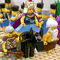

|
|
|
1 Kings 1
|
|
| 1:1
Now king David was old
and stricken in years; and they covered him with clothes, but he gat no heat. |


 (1:1-4) Old King David tries to get some heat by having a beautiful
virgin minister unto him. (1:1-4) Old King David tries to get some heat by having a beautiful
virgin minister unto him.
(1:1) "King David was old
and stricken in years; and they covered him with clothes, but he gat no heat."
(1:2) "Let there be sought for my Lord the king a young virgin:
and let her stand before the king, and let her cherish him, and let her lie
in thy bosom, that my lord the king may get heat."
(1:3) "So they sought for a
fair damsel throughout all the coasts of Israel, and found Abishag a
Shunammite, and brought her to the king."
(1:4) "And the damsel was
very fair, and cherished the king, and ministered to him: but the king knew her not."
|
| 1:2
Wherefore his servants
said unto him, Let there be sought for my lord the king a young virgin:
and let her stand before the king, and let her cherish him, and let her lie
in thy bosom, that my lord the king may get heat.
|
| 1:3
So they sought for a
fair damsel throughout all the coasts of Israel, and found Abishag a
Shunammite, and brought her to the king.
|
| 1:4
And the damsel was
very fair, and cherished the king, and ministered to him: but the king knew her not.
|
| 1:5
Then Adonijah the son of Haggith exalted himself, saying, I will be king:
and he prepared him chariots and horsemen, and fifty men to run before him.
|
| 1:6
And his father had not displeased him at any time in saying, Why hast thou
done so? and he also was a very goodly man; and his mother bare him after
Absalom.
|
| 1:7
And he conferred with Joab the son of Zeruiah, and with Abiathar the
priest: and they following Adonijah helped him.
|
| 1:8
But Zadok the priest, and Benaiah the son of Jehoiada, and Nathan the
prophet, and Shimei, and Rei, and the mighty men which belonged to David,
were not with Adonijah. |
Young
Woman for an Old Man
|
| 1:9
And Adonijah slew sheep and oxen and fat cattle by the stone of Zoheleth,
which is by Enrogel, and called all his brethren the king's sons, and all
the men of Judah the king's servants:
|
| 1:10
But Nathan the prophet, and Benaiah, and the mighty men, and Solomon his
brother, he called not. |
Bathsheba's
Scheme
|
| 1:11
Wherefore Nathan spake unto Bathsheba the mother of Solomon, saying, Hast
thou not heard that Adonijah the son of Haggith doth reign, and David our
lord knoweth it not?
|
| 1:12
Now therefore come, let me, I pray thee, give thee counsel, that thou
mayest save thine own life, and the life of thy son Solomon. |
|
| 1:13
Go and get thee in unto king David, and say unto him, Didst not thou, my
lord, O king, swear unto thine handmaid, saying, Assuredly Solomon thy son
shall reign after me, and he shall sit upon my throne? why then doth
Adonijah reign? |
|
| 1:14
Behold, while thou yet talkest there with the king, I also will come in
after thee, and confirm thy words. |
|
| 1:15
And Bathsheba went in unto the king into the chamber: and the king was
very old; and Abishag
the Shunammite ministered
unto the king. |
|
| 1:16
And Bathsheba bowed, and did obeisance unto the king. And the king said,
What wouldest thou? |
|
| 1:17
And she said unto him, My lord, thou swarest by the LORD thy God unto
thine handmaid, saying, Assuredly Solomon thy son shall reign after me, and
he shall sit upon my throne. |
|
| 1:18
And now, behold, Adonijah reigneth; and now, my lord the king, thou
knowest it not: |
|
| 1:19
And he hath slain oxen and fat cattle and sheep in abundance, and hath
called all the sons of the king, and Abiathar the priest, and Joab the
captain of the host: but Solomon thy servant hath he not called. |
|
| 1:20
And thou, my lord, O king, the eyes of all Israel are upon thee, that thou
shouldest tell them who shall sit on the throne of my lord the king after
him. |
|
| 1:21
Otherwise it shall come to pass, when my lord the king shall sleep with
his fathers, that I and my son Solomon shall be counted offenders. |
|
| 1:22
And, lo, while she yet talked with the king, Nathan the prophet also came
in. |
|
| 1:23
And they told the king, saying, Behold Nathan the prophet. And when he was
come in before the king, he bowed himself before the king with his face to
the ground. |
|
| 1:24
And Nathan said, My lord, O king, hast thou said, Adonijah shall reign
after me, and he shall sit upon my throne? |
|
| 1:25
For he is gone down this day, and hath slain oxen and fat cattle and sheep
in abundance, and hath called all the king's sons, and the captains of the
host, and Abiathar the priest; and, behold, they eat and drink before him,
and say, God save king Adonijah. |
|
| 1:26
But me, even me thy servant, and Zadok the priest, and Benaiah the son of
Jehoiada, and thy servant Solomon, hath he not called. |
|
| 1:27
Is this thing done by my lord the king, and thou hast not shewed it unto
thy servant, who should sit on the throne of my lord the king after him? |
|
| 1:28
Then king David answered and said, Call me Bathsheba. And she came into
the king's presence, and stood before the king. |
|
| 1:29
And the king sware, and said, As the LORD liveth, that hath redeemed my
soul out of all distress, |
|
| 1:30
Even as I sware unto thee by the LORD God of Israel, saying, Assuredly
Solomon thy son shall reign after me, and he shall sit upon my throne in my
stead; even so will I certainly do this day. |
|
| 1:31
Then Bathsheba bowed with her face to the earth, and did reverence to the
king, and said, Let my lord king David live for ever. |
|
| 1:32
And king David said, Call me Zadok the priest, and Nathan the prophet, and
Benaiah the son of Jehoiada. And they came before the king. |
|
| 1:33
The king also said unto them, Take with you the servants of your lord, and
cause Solomon my son to ride upon mine own mule, and bring him down to
Gihon: |
|
| 1:34
And let Zadok the priest and Nathan the prophet anoint him there king over
Israel: and blow ye with the trumpet, and say, God save king Solomon. |
|
| 1:35
Then ye shall come up after him, that he may come and sit upon my throne;
for he shall be king in my stead: and I have appointed him to be ruler over
Israel and over Judah. |
|
| 1:36
And Benaiah the son of Jehoiada answered the king, and said, Amen: the
LORD God of my lord the king say so too. |
|
| 1:37
As the LORD hath been with my lord the king, even so be he with Solomon,
and make his throne greater than the throne of my lord king David. |
Solomon Becomes King
|
| 1:38
So Zadok the priest, and Nathan the prophet, and Benaiah the son of
Jehoiada, and the Cherethites, and the Pelethites, went down, and caused
Solomon to ride upon king David's mule, and brought him to Gihon.
|
| 1:39
And Zadok the priest took an horn of oil out of the tabernacle, and
anointed Solomon. And they blew the trumpet; and all the people said, God
save king Solomon. |

 (1:39-40)"The people piped with pipes, and
rejoiced with great joy, so that the earth rent with the sound of them." (1:39-40)"The people piped with pipes, and
rejoiced with great joy, so that the earth rent with the sound of them."
When Solomon was anointed king the people sang and shouted so loudly that it caused an earthquake!
|
| 1:40
And all the people came up after him, and the people piped with pipes, and
rejoiced with great joy, so that the earth rent with the sound of them.
|
| 1:41
And Adonijah and all the guests that were with him heard it as they had
made an end of eating. And when Joab heard the sound of the trumpet, he
said, Wherefore is this noise of the city being in an uproar? |
|
| 1:42
And while he yet spake, behold, Jonathan the son of Abiathar the priest
came; and Adonijah said unto him, Come in; for thou art a valiant man, and
bringest good tidings. |
|
| 1:43
And Jonathan answered and said to Adonijah, Verily our lord king David
hath made Solomon king. |
|
| 1:44
And the king hath sent with him Zadok the priest, and Nathan the prophet,
and Benaiah the son of Jehoiada, and the Cherethites, and the Pelethites,
and they have caused him to ride upon the king's mule: |
|
| 1:45
And Zadok the priest and Nathan the prophet have anointed him king in
Gihon: and they are come up from thence rejoicing, so that the city rang
again. This is the noise that ye have heard. |
|
| 1:46
And also Solomon sitteth on the throne of the kingdom. |
|
| 1:47
And moreover the king's servants came to bless our lord king David,
saying, God make the name of Solomon better than thy name, and make his
throne greater than thy throne. And the king bowed himself upon the bed. |
|
| 1:48
And also thus said the king, Blessed be the LORD God of Israel, which hath
given one to sit on my throne this day, mine eyes even seeing it. |
|
| 1:49
And all the guests that were with Adonijah were afraid, and rose up, and
went every man his way. |
|
| 1:50
And Adonijah feared because of Solomon, and arose, and went, and caught
hold on the horns of the altar. |
|
| 1:51
And it was told Solomon, saying, Behold, Adonijah feareth king Solomon:
for, lo, he hath caught hold on the horns of the altar, saying, Let king
Solomon swear unto me today that he will not slay his servant with the
sword. |
|
| 1:52
And Solomon said, If he will shew himself a worthy man, there shall not an
hair of him fall to the earth: but if wickedness shall be found in him, he
shall die. |
|
| 1:53
So king Solomon sent, and they brought him down from the altar. And he
came and bowed himself to king Solomon: and Solomon said unto him, Go to
thine house.
|
|
|